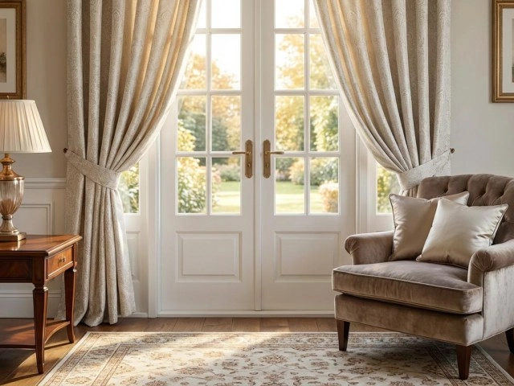

Look and feel: Plush, rich, heavy
Light control: High
Best for: Master bedrooms, formal living rooms with AC
Watch out for: Dust, heavy hardware, damp rooms

Luxury curtain fabric guide · Curtain Canvas blog
The best curtain fabric for luxury homes in Bangladesh is a lined velvet, a silk blend, or a fine linen drape, usually paired with a sheer layer behind it. These fabrics give a room the weight, sheen, and fall that a luxury interior needs, and with the right lining, they cope well with Bangladesh's heat, humidity, and strong sun.
Choosing between them is not only a matter of taste. A fabric that looks wonderful in a showroom can fade on a south-facing window in Dhanmondi or turn musty in a damp corner during the monsoon. This guide walks you through the fabrics worth considering, where each one works best, and how to decide for your own home.
Climate & performance
Curtains in Bangladesh work harder than curtains in a temperate country. Three local conditions decide how a fabric behaves over the years, so it is worth understanding them before you fall for a color.
Price alone does not make a fabric luxurious. In a well-designed interior, luxury comes from four qualities working together:
Here are the fabrics we would shortlist for a high-end home, with an honest view of where each one shines and where it needs care.
Velvet is the first fabric most people picture when they think of luxury curtains. Its dense pile absorbs light and sound, so a velvet curtain makes a living room or master bedroom feel calm, private and substantial. It also blocks light very well, which suits bedrooms and home theatres.
In Bangladesh, velvet works best in air-conditioned rooms and when it is properly lined and hung on a sturdy track or rod, since it is heavy. It is a weaker choice for humid, poorly ventilated rooms, where it can hold moisture and dust. Choose a high-quality polyester or cotton-blend velvet if the room sees monsoon dampness.
Silk has an unmatched lustre and a fluid fall, which makes it a favourite for formal living and dining rooms. Pure silk is delicate, though. Strong sunlight can fade and weaken it, so it needs a protective lining and should be kept away from damp walls.
For most homes, a silk blend or a good silk-look fabric gives the same glow with better durability and easier upkeep. It is a smart way to get the look without the maintenance worries.
Linen filters daylight softly and gives a room an airy, natural character. It suits Bangladesh well in daytime spaces such as living rooms, dining areas and sunrooms, because it is light and breathable.
Pure linen wrinkles and is translucent when unlined, so it offers little privacy at night. A linen blend with a lining keeps the texture while adding structure, and it pairs beautifully with a heavier curtain for evening.
Jacquard and brocade have the pattern woven into the cloth, which gives a rich, traditional look that suits statement rooms, formal sitting areas and homes with classic or transitional interiors. They are naturally heavy and hold their shape well, so they drape with real authority.
They look best on large windows and in generously proportioned rooms. In a small room, a bold woven pattern can overwhelm the space.
Sheers are not a lesser choice. A fine voile or soft sheer diffuses harsh sunlight, protects the furniture and carpet from fading, and lets you keep the window uncovered by heavy fabric all day. Used behind a drape, it is one of the most useful layers in any luxury scheme.
Blackout is best treated as a lining or a backing rather than a standalone look. A good blackout lining behind a decorative fabric gives you darkness for sleep, better heat control, and protection for the face fabric, while the curtain still looks and falls like a luxury piece from the room side.
Use this table to compare the six fabrics side by side before you shortlist your favorites.
Look and feel: Plush, rich, heavy
Light control: High
Best for: Master bedrooms, formal living rooms with AC
Watch out for: Dust, heavy hardware, damp rooms
Look and feel: Lustrous, fluid
Light control: Low to medium
Best for: Formal living and dining rooms
Watch out for: Sun fading, moisture, cleaning cost
Look and feel: Natural, airy
Light control: Low to medium
Best for: Daytime living areas, sunrooms
Watch out for: Creasing, low privacy when unlined
Look and feel: Woven pattern, structured
Light control: Medium to high
Best for: Statement rooms, classic interiors
Watch out for: Overpowering small spaces
Look and feel: Soft, translucent
Light control: Low
Best for: Layering in every room
Watch out for: Needs a drape for night privacy
Look and feel: Depends on face fabric
Light control: Very high
Best for: Bedrooms, media rooms
Watch out for: Choose a quality lining so the fall stays soft
The same fabric will not suit every room. Match the fabric to what the room is used for and how much sun it receives.
Best fabric choice: Linen blend or silk blend over a sheer; velvet for a formal, air-conditioned space
Why it works: Soft daylight by day, richer drape for evening gatherings
Best fabric choice: Lined velvet or a heavy jacquard with blackout backing, plus a sheer
Why it works: Darkness, privacy and quiet; a layered look that feels like a boutique hotel
Best fabric choice: Silk blend or fine jacquard
Why it works: Elegant sheen that glows under evening light, with little handling or wear
Best fabric choice: Linen blend with lining
Why it works: Light, welcoming and easy to look after
Best fabric choice: Textured linen blend with sheer layer
Why it works: Filters glare without making the room feel closed in
Best fabric choice: Sheer voile with a light drape, never untreated silk
Why it works: Handles direct sun and frequent opening better than heavy cloth
This layered approach also solves the biggest trade-off in Bangladesh: you can keep the window bright and open during the day with the sheer alone, then close the full drape in the evening or for sleep. If you want to see how a layered scheme would look on your own windows, our trial hanging service lets you judge it in your own light before you decide. Most luxury windows are not a single curtain. They are a small system of layers, each with a job:
A luxury home does not need to swap its curtains every few months, but it helps to choose fabrics that cope across the year.
A few habits protect your investment and keep the fabric looking new.
Even a beautiful fabric can disappoint if you overlook these common mistakes, so check them before you order.
Picking a fabric from a description is hard, and a wrong choice is costly. That is why Curtain Canvas builds the process around your home rather than around a catalogue. Our interior design-focused approach looks at your lighting, furniture, colors, window proportions, and privacy needs before recommending a fabric.
Here is how we can help:
Common questions